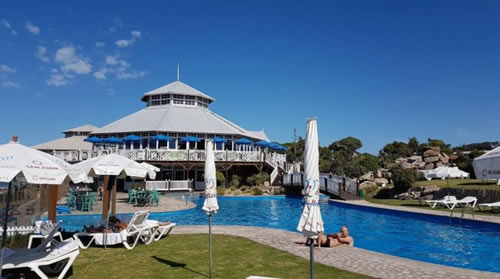

Real Chubut - Agencia de Noticias


La temporada, sin boom de turistas y con bajo consumo

Con el dólar alto, las expectativas eran de una gran temporada. Pero solo en algunos casos los niveles de ocupación superan el 70%. Brasil y Uruguay también sintieron el impacto.
Se esperaba un verano a pleno en los centros turísticos del país en virtud de que la fuerte suba del dólar, hoy por encima de los $ 38, iba a desalentar la salida de los argentinos al exterior y potenciar los destinos locales. Sin embargo, los primeros días de enero no marcan un “boom” en el turismo interno. Al menos por ahora, porque se espera un repunte para la segunda mitad del mes y para febrero, cuando los precios suelen ser un poco más bajos.
En la previa al inicio de la temporada las expectativas eran altas. La realidad, por el momento, es otra. Si bien los primeros números indican una suba con respecto al año pasado, lo cierto es que es leve, con una ocupación en los principales centros turísticos que solo en algunos casos supera el 70%, cifras que mejoran levemente los fines de semana. La foto se repite tanto en la Costa atlántica bonaerense como en otros destinos del interior del país.
Más allá de esto, para Aldo Elías, presidente de la Cámara Argentina de Turismo (CAT), hay “un muy buen comienzo de año” y dijo que el sector está “conforme” con los resultados. “Son lo que imaginábamos. El ‘boom’ era una hipótesis. Es un buen verano”, destacó en diálogo con este medio.
Asimismo, señaló que los niveles de ocupación que se registran “son números importantes” teniendo en cuenta lo que dejó 2018 en materia de poder adquisitivo. “El consumo viene pinchado, pero es lógico. Estamos en una situación económica del país muy complicada. Y eso repercute en el bolsillo de los argentinos”, afirmó.
Algunos ejemplos de un relevamiento realizado por ámbito.com reafirman esa situación. En Mar del Plata, comentaron en Merit Hotel que esta semana tuvieron un ocupación de 50%, que casi se duplicará según las reservas para sábado y domingo, pero que luego volverá a bajar. “Es un poco más baja que el año pasado”, afirmaron. En promedio los viajantes se quedan apenas 3 o 4 días. Un panorama un poco mejor brindaron en 02 Hoteles, con casi 90%, aunque está en los mismos niveles que el año pasado. Una situación similar presenta el hotel Edith en Villa Gesell. En tanto que en la cordobesa Villa Carlos Paz las reservas no pasan del 70%.
Datos que aporta la Federación Empresaria Hotelera Gastronómica de la República Argentina (FEHGRA) indican que otros destinos bonaerenses como Mar de Ajó, Pinamar, San Clemente del Tuyú o Tandil muestran porcentajes similares, o incluso menores, de ocupación.
Yendo hacia el interior del país, destinos como Santiago del Estero, Jujuy, Salta, o Catamarca no presentan un mejor panorama. Al igual que Bariloche, Villa La Angostura, Ushuaia, Mendoza, San Juan, Santa Fe, Corrientes, o Puerto Madryn, aunque sus números no son malos teniendo en cuenta que no son los más “veraniegos”.
Mientras que otra cuestión que se percibe es una mayor cantidad de familias y amigos que alquilan propiedades grandes para compartir gastos.
“Se esperaba una mejor temporada, y estamos en un 60% promedio. No vamos a llegar al promedio del 80% de 2018”, sostuvo Sandro Gressani, propietario de los hoteles Nevada y Alma del Lago en Bariloche.
Un dato a destacar es que varias de las fuentes consultadas esperan que para la segunda quincena de enero y para el mes de febrero los niveles de ocupación mejores. Claro está, son semanas en la que los precios suelen ser un poco más bajos que las primeras del año. Pero no es menor que se habla desde la expectativa, cuando el turismo se maneja con reservas anticipadas, por lo que tampoco está claro lo que vaya a ocurrir.
“Históricamente febrero es más barato. Enero solía ser imbatible pero ahora es más parejo. Esperamos que la actividad no se caiga en la segunda quincena; y febrero vamos a ir viendo”, opinó Elías.
Por el lado del consumo también viene flojo. En los paradores costeros que en las últimas temporadas solían estar casi llenos se ve poca gente. “El año pasado teníamos 10 u 11 mesas ocupadas, ahora serán 4 o 5”, comentaron en un local gastronómico. Otra postal que se repite es la de gran cantidad de las tradicionales heladeritas en las playas.
Los precios tampoco ayudan. En distintos productos alimenticios de venta ambulante, paradores y restaurantes se registran aumentos de entre 30% y 50% con relación a la temporada pasada. Incrementos y el menor poder adquisitivo que dejó el 2018 en los salarios le están pegando al consumo.
En la industria del ocio también se siente la pérdida de poder adquisitivo. “Será una temporada menor a la del año pasado (…) Cuando en marzo se vean todos los datos, va a dar menor cantidad de boletos vendidos”, dijo al respecto el productor Carlos Rottemberg en declaraciones a radio Mitre de Mar del Plata. El “termómetro” con el que se anticipó a lo que será el verano lo tuvo con lo ocurrido en los teatros porteños en los últimos meses. “La baja en el teatro de Buenos Aires demostraba una posible baja en Mar del Plata”, analizó.
El impacto también se siente del otro lado del Río de la Plata. Datos conocidos en las últimas horas indica una merma de llegada de argentinos de cerca del 30%. Ese nivel inferior con respecto a la temporada pasada ya había sido anticipado en diciembre por fuentes del sector consultadas por ámbito.com. Los que dejaron de ir sobre todo a Punta del Este es una porción más vinculada a sectores medios, aunque los habitué siguen yendo.
Y Brasil tampoco fue ajeno. Tal como publicó este medio, fuentes consultadas del vecino país señales que en Buzios, uno de los destinos tradicionales de los argentinos, recibió hasta ahora menos visitantes en comparación con temporadas pasadas y además consumen menos. Tres agencias distintas remarcaron esa tendencia y hablan incluso de un descenso cercano a la mitad que otros años.
Fuente: Ambito